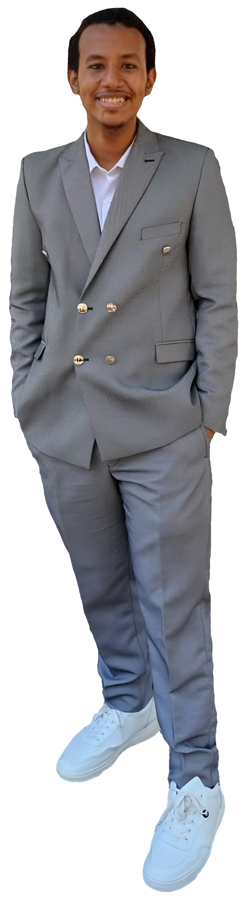

READY? ▮
منهج ICT...يتفهم مش يتحفظ
منصة لطلاب الإعدادي والثانوي مع بلال عبدالناصر، مدرّب ICT وبرمجة. شرح واضح وأمثلة وخطوات عملية.
RANK S · أوائل علوم الحاسب
P1

PLAYER 1 · بلال
4.86من ٥ — أكتر من ٨٥٠٠ تقييم طالب
Top 3من أوائل ٣ طلاب في علوم الحاسب، جامعة القاهرة
KG → 11بدرّس ICT والبرمجة من KG لحد Grade 11
EYouthمن أفضل المدرّبين وسط أكتر من ٦٠٠ مدرّب
اختار مرحلتك
بعدها الصف والوحدة والدرس.
مش بس تحفظ المعلومة وتنساها بعد الامتحان. المهم تفهمها كويس وتقدر تستخدمها بنفسك.
أسئلة شائعة
أبدأ منين؟
اختار مرحلتك، وبعدها الصف والوحدة والدرس اللي محتاجه.
الدروس بالعربي ولا بالإنجليزي؟
الموقع بيشتغل بالعربي والإنجليزي، وزرار اللغة في الشريط اللي فوق.
مين اللي بيشرح؟
بلال عبدالناصر، مدرّب ICT وبرمجة، بيدرّس من KG لحد Grade 11.
فيه تمارين وتطبيق؟
أيوه، الدروس فيها أمثلة وخطوات عملية وأسئلة تمارين.